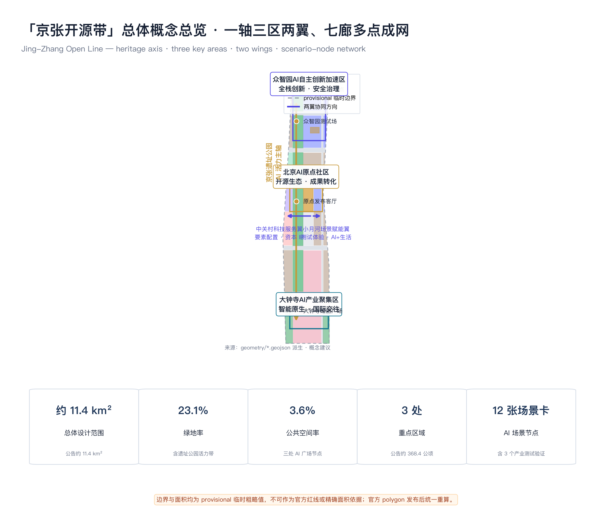
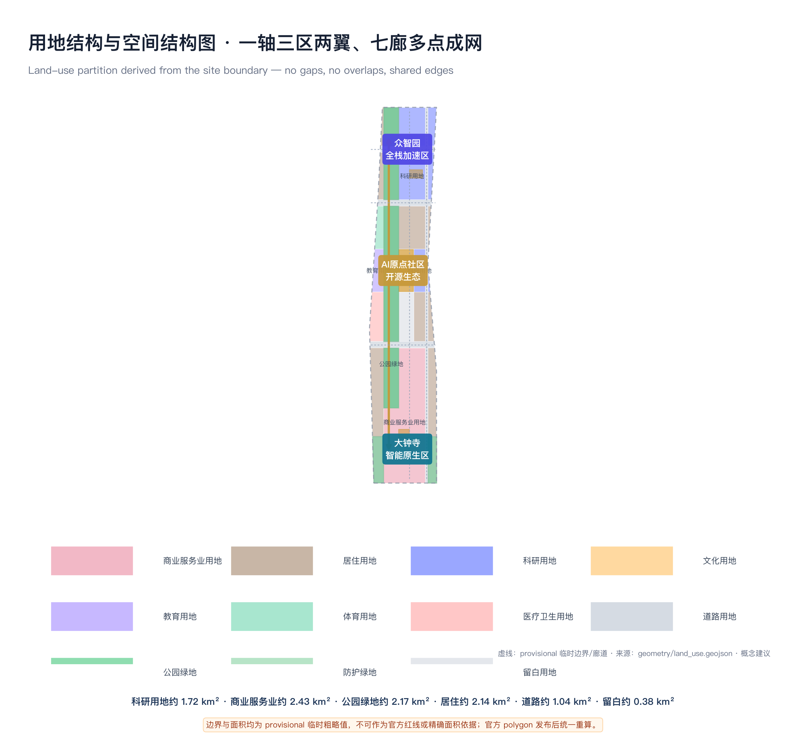
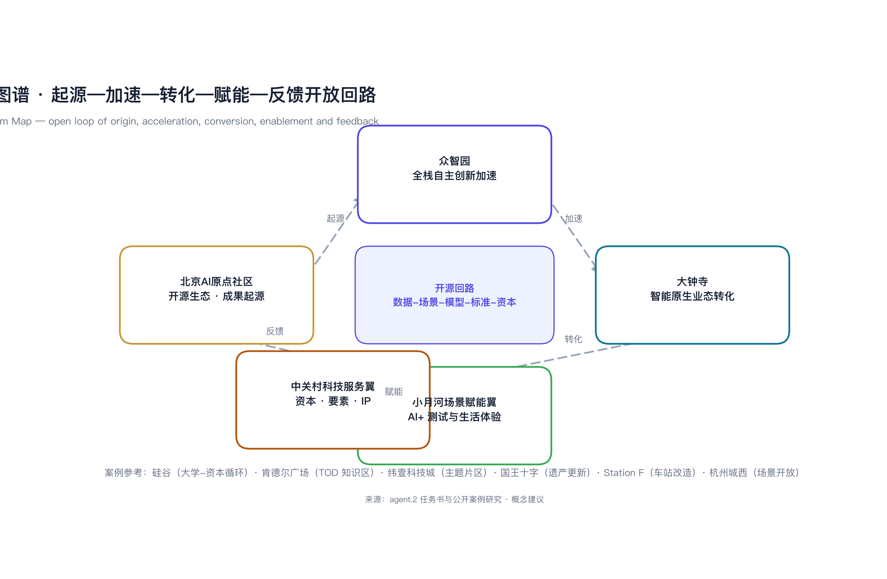
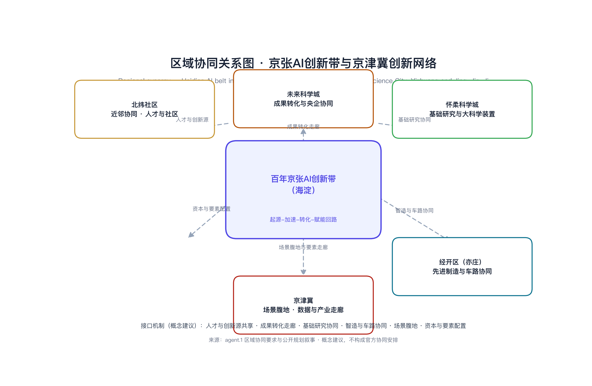
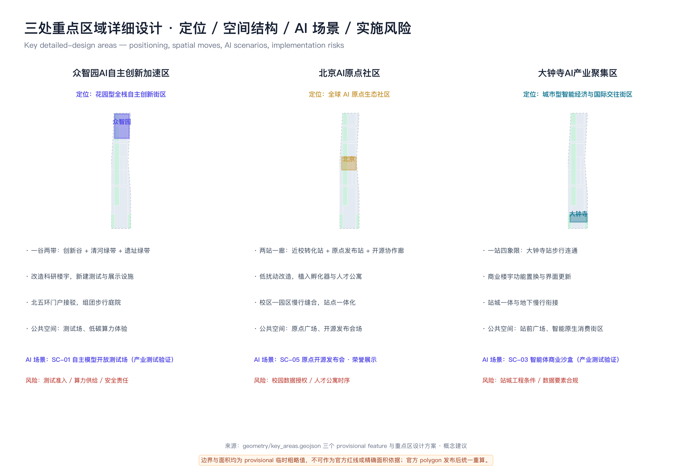
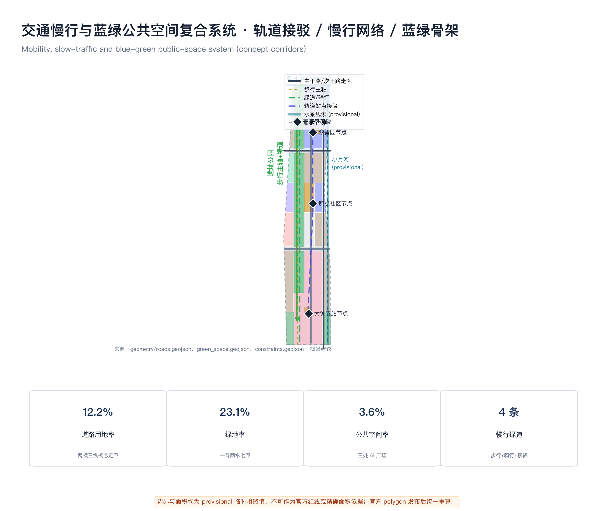
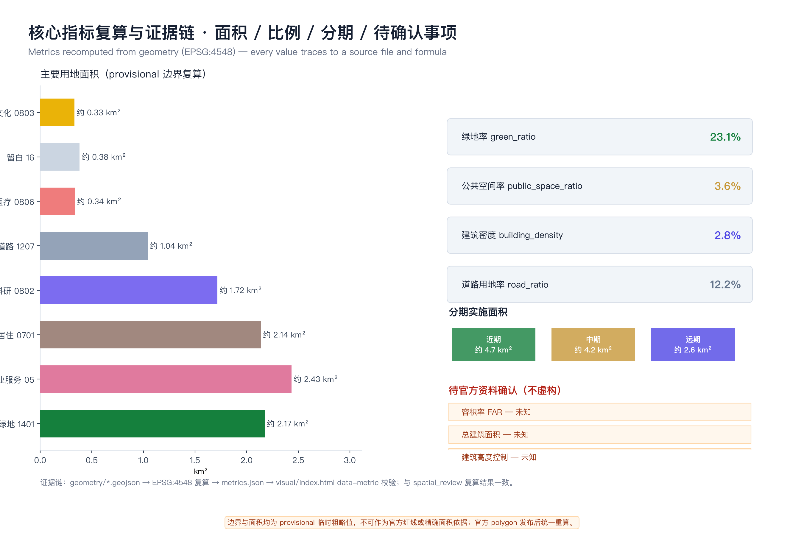

「京张开源带」：一条铁路的智能开放——百年京张AI创新带城市设计
以京张铁路遗址公园为公共空间主轴，提出“一轴三区两翼、七廊多点成网”的空间结构，把百年铁路文化、中关村创新文化与AI开源文化组织为可运营、可复算、可继续深化的城市设计方案。
「京张开源带」：一条铁路的智能开放——百年京张AI创新带城市设计
设计依据与资料清单
本方案是面向「百年京张AI创新带城市设计国际方案征集」的正式 AI 智能体设计包，以北京市规划和自然资源委员会海淀分局发布的资格预审公告为第一任务依据 [source:OFFICIAL-ANNOUNCEMENT]，以仓库面向智能体的开源征集任务书为补充任务依据 [source:AGENT-TASKBOOK]，并完整读取 brief/site-package/ 中的设计任务书、允许设计空间、枚举、指标区间、标准和图式约束 [source:SITE-PACKAGE]。方案使用 data/source_registry.json 区分正式可用、背景与临时替代资料 [source:SOURCE-REGISTRY]，使用 data/processed/agent_fact_pack.md 作为阅读导航层，其本身不是新的权威来源 [source:PROCESSED-FACT-PACK]。
本提交所采用的总体设计边界与三处重点区域边界，均为仓库提供的临时粗略多边形：geometry/site_boundary.geojson 取自 PROV-SITE-001 [source:BOUNDARY-SOURCE]，geometry/key_areas.geojson 的三处重点区取自 PROV-KEY-001/002/003 [source:KEY-AREA-SOURCE]。这些边界以公告文字四至和约 11.4 平方公里、约 368.4 公顷的面积约束推定，仅用于方案生成、自检、可视化与设计讨论，不得作为 official redline、审批依据或精确面积复算依据；官方 polygon 发布后，全部图层与指标必须统一重算。该数据缺口不阻断内容评分，本方案在正文、HTML、来源、假设和自检中均如实披露。
设计深度要求由公告的成果要求与专业标准共同约束：城市设计统筹依据《城市设计管理办法》[standard:MOHURD-URBAN-DESIGN-MEASURES]，控规深度城市设计依据《城市、镇控制性详细规划编制审批办法》[standard:MOHURD-CONTROL-DETAILED-PLANNING]，用地分类依据《国土空间调查、规划、用途管制用地用海分类指南》[standard:MNR-LAND-USE-CLASSIFICATION-GUIDE]，图纸表达深度参考《建筑工程设计文件编制深度规定（2016年版）》[standard:MOHURD-ARCH-DESIGN-DEPTH-2016]。面向智能体的六项任务与三大定位、五大功能、三区两翼协同由开源征集任务书规定 [standard:PROJECT-AGENT-OPEN-CALL-TASKBOOK]，公告任务与成果深度由资格预审公告规定 [standard:PROJECT-OFFICIAL-ANNOUNCEMENT]。
资料使用边界如下：官方公告仅用于项目名称、范围文字、面积值、设计任务与成果深度等正式任务依据，不用于精确红线与法定控制；任务书摘录用于智能体任务响应与公开合规语言；临时边界只用于生成、展示与自检。方案中凡是涉及容积率、建筑高度、建筑密度、道路红线、拆改留、工程线位、投资与实施时序的内容，均以“概念建议/参考方案/可供专业团队深化研究”表述，并在 assumptions.json 中列为待官方资料确认事项。现状建筑、控规条件、市政承载、土地权属等缺项写入 missing-data 对应清单，不虚构、不替代。

三层范围工作框架
方案按公告确定的三层范围组织工作 [source:OFFICIAL-ANNOUNCEMENT]：统筹研究范围约 43.6 平方公里，关注世界级 AI 创新生态、产业链协同、三区两翼和未来城市形态研究，深度为战略与结构层面 [depth:three_level_scope_framework]；总体设计范围约 11.4 平方公里，以京张遗址公园周边 1-2 公里城市地区和产业区为对象，达到控制性详细规划的城市设计深度，落实用地、更新、交通、市政与风貌 [depth:overall_spatial_structure]；重点区域范围约 368.4 公顷，对众智园、北京AI原点社区、大钟寺三处开展详细设计，达到规划综合实施方案的城市设计深度 [depth:three_key_area_detailed_design]。
三层范围对应的工作对象与数据落点如下：统筹研究对应产业图谱、命名体系、生态案例与活动体系，落点于 compliance_matrix.json、standard_matrix.json 与正文；总体设计对应 geometry/land_use.geojson、geometry/buildings.geojson、geometry/roads.geojson、geometry/green_space.geojson、geometry/public_space.geojson 与 geometry/phasing.geojson [data:geometry/land_use.geojson#LU-001]；重点区域对应 geometry/key_areas.geojson 的三个 feature [data:geometry/key_areas.geojson#PROV-KEY-001]。现状诊断基于公告范围文字、公开资料包与临时边界建立资料缺口清单 [depth:existing_conditions_diagnosis]，三层范围面积与边界以 [metric:site_area_sqm]、[metric:key_area_total_sqm] 与公告面积对照，指标复算方法见 metrics.json [depth:metrics_recalculation]。

统筹研究范围产业与未来城市研究
总体概念与命名体系
本方案提出主名称「京张开源带」，英文名 Jing-Zhang Open Line（缩写 JZ-OPEN），并与公告三大定位一一对应：百年京张文化带对应「文脉线 Heritage Line」，都市AI生活体验带对应「生活线 Living Line」，AI融合创新带对应「创新线 Innovation Line」[standard:PROJECT-OFFICIAL-ANNOUNCEMENT]。「开源」一词取双重含义：京张铁路是中国人自主设计建造的第一条干线铁路，代表自主开创；而 AI 时代开源是全球协作创新的基本方式。一条铁路把“自主开创”与“全球开源”缝合为同一叙事，是「一带总体概念」的核心 [depth:overall_spatial_structure]。
三区沿用官方名称并赋予角色：众智园AI自主创新加速区（全栈自主创新与治理话语权）、北京AI原点社区（世界级AI创新生态原点）、大钟寺AI产业聚集区（智能原生新业态）。两翼命名为中关村科技服务翼（要素全球化配置、中关村IP与资本赋能）与小月河场景赋能翼（AI场景赋能与智能化AI活力城市）[source:AGENT-TASKBOOK]。节点采用统一编号体系 JZ-OPEN-01 至 JZ-OPEN-99，覆盖轨道站点、公共广场、AI场景节点与纪念地标，形成可扩展的命名与导视母题。
Logo 与视觉识别方向
Logo 方向取京张铁路青龙桥段“人字形”展线与开源分叉符号的同构：两条钢轨自底部汇合，向上左右张开，中间留出象征 open 的开口，形似铁路道岔与芯片引脚的叠合。视觉系统不做插画化、卡通化表达，坚持技术图解与工业遗存气质 [source:AGENT-TASKBOOK]。
**VI 规范方向（供专业团队深化）**：标准色为钢轨蓝灰（#3B4A5A，结构/轨道色）、开源绿（#2E8B57，创新/开放色）、京张黄铜（#C79838，遗产/纪念色），辅助色为深墨（#162033）与白色；中文标题方向使用思源黑体或苹方类无衬线字体，西文使用等宽/技术无衬线（DIN 类）方向，正式字体须获得授权后定稿；使用规则包括 Logo 四周留白不小于 Logo 高度的 0.5 倍、深色背景使用反白版、禁止拉伸变形与添加特效；商标注册前仅作展示性方向示意。辅助图形“轨道刻度”以十年为单位记录从 1909 到 2109 的百年刻度，并作为荣誉展示与里程碑纪念体系的母题。
AI 创新生态图谱
生态图谱以“起源—加速—转化—赋能—反馈”为回路主线：AI原点社区（起源）→ 众智园（加速）→ 大钟寺（转化）→ 小月河场景赋能翼（赋能）→ 中关村科技服务翼（资本与要素）→ 反馈回原点，中心为“数据-场景-模型-标准-资本”开源回路，并对照 6 个全球案例提炼可转化机制 [source:AGENT-TASKBOOK][depth:three_level_scope_framework]。

区域协同与接口机制
任务书评审要求体现与北纬社区、未来科学城、怀柔科学城、经开区及京津冀的创新协同 [source:AGENT-TASKBOOK]。本方案提出六类接口机制（概念建议）：其一，与北纬社区共建人才与创新源共享；其二，与未来科学城衔接成果转化走廊；其三，与怀柔科学城协同基础研究与大科学装置资源；其四，与经开区（亦庄）联动先进制造与车路协同测试；其五，面向京津冀组织场景腹地与数据要素走廊；其六，依托中关村科技服务翼配置资本与要素。具体协同协议、数据接口与合作机制由专业团队与相关主体进一步磋商，本方案不构成官方协同安排。

国际传播文案方向
国际传播主线文案（方向）为：**“From the first railway built by Chinese engineers to the first AI innovation belt co-created with agents worldwide.”**（从中国人自主修建的第一条铁路，到全球智能体共建的第一条 AI 创新带）。叙事按三幕组织：1909 自主开创（京张铁路）、1978—2000 年代中关村创新、2020 年代全球 AI 开源协作；传播矩阵覆盖中、英、法、西等多语言内容，并依托开源项目、荣誉纪念体系与年度活动持续沉淀品牌资产。本段为传播文案方向，不涉及已确定的对外发布安排 [source:AGENT-TASKBOOK]。
全球 AI 创新生态案例（研究参考）
本方案以 6 个公开可检索的全球创新生态为研究参考，不构成对任何园区模式的复制承诺，仅提炼可转化机制 [depth:three_level_scope_framework]：
| 案例 | 公开特征 | 可转化机制 | | --- | --- | --- | | 美国硅谷（斯坦福—资本—企业循环） | 大学策源、风险资本、企业转化、人才回流的长期循环 | 原点社区建设“近校创新走廊”与科技服务翼资本入口 | | 美国波士顿肯德尔广场 | 以研究机构为核心的高密度知识经济区，TOD 与公共空间高度复合 | 轨道站点一体化与“公共客厅密度” | | 新加坡纬壹科技城 | 政府统筹、主题片区、全天候步行网络 | 三区主题分工与绿道慢行网 | | 英国伦敦国王十字知识区 | 铁路工业遗产更新为知识经济区 | 京张遗址公园“遗产+知识经济”双主轴 | | 法国巴黎 Station F | 火车站改造为大规模开放式创业园区 | 大钟寺/原点设置“车站式”开放创新客厅 | | 杭州城西科创大走廊 | 场景开放、云计算生态、产城融合 | 小月河场景赋能翼的开放测试与场景运营 |
三区两翼协同回路与五大功能
三区两翼形成“起源—加速—转化—赋能—反馈”开放回路：北京AI原点社区负责开源生态与成果起源，众智园负责全栈自主创新与安全治理加速，大钟寺负责智能原生业态与商业转化；中关村科技服务翼提供资本、人才、知识产权与要素配置，小月河场景赋能翼提供测试、体验与生活场景，数据与场景再反馈回原点社区形成迭代闭环。五大功能——AI全栈自主创新体系、世界级AI创新生态、AI+场景赋能新范式、智能化AI活力城市、AI治理全球话语权——分别由众智园、原点社区、小月河翼、生活线街区、众智园治理展示区承载 [source:AGENT-TASKBOOK]。
统筹研究范围的空间策略最终落到总体设计范围的用地与节点：产业功能对应 geometry/land_use.geojson 中的科研、教育、商业与留白用地分区 [data:geometry/land_use.geojson#LU-002]，公共交往对应 geometry/public_space.geojson [data:geometry/public_space.geojson#PUBLIC-001]，蓝绿骨架对应 geometry/green_space.geojson [data:geometry/green_space.geojson#GREEN-001]。
总体设计范围城市更新与控规深度城市设计
空间结构：一轴三区两翼、七廊多点成网
总体设计范围采用“一轴三区两翼、七廊多点成网”空间结构：一轴即京张遗址公园 AI 活力主轴，南北贯通、东西缝合，是文化、公共空间与慢行主骨架；三区即三处重点区域；两翼即中关村科技服务翼与小月河场景赋能翼；七廊即沿主要道路与水系的蓝绿慢行廊道；多点即轨道站点、广场、AI 场景节点组成的日常网络 [depth:overall_spatial_structure]。该结构落实为 geometry/land_use.geojson 的完整用地分区，用地分区由场地边界切割而成，无缝隙、无重叠，边界坐标严格共享 [depth:land_use_layout]。
用地布局
用地布局遵循“遗产主轴优先、创新空间集中、生活服务均衡”的原则：公园绿地与开敞空间沿遗址公园主轴集中，构成 1401 类绿地骨架 [metric:land_use_area_1401_sqm]；科研用地集中于众智园与原点社区孵化转化区 [metric:land_use_area_0802_sqm]；教育用地依托高校集聚布置于原点社区西段 [metric:land_use_area_0804_sqm]；商业服务业用地集中于大钟寺与生活线街区 [metric:land_use_area_05_sqm]；居住用地与社区服务用地沿两翼与生活带均衡分布 [metric:land_use_area_0701_sqm]；道路用地沿干路与支路带组织 [metric:land_use_area_1207_sqm]；留白用地用于远期弹性与功能转换 [metric:land_use_area_16_sqm]。文化用地支撑原点发布客厅与遗产叙事 [metric:land_use_area_0803_sqm]，体育与医疗卫生用地补足人才生活服务 [metric:land_use_area_0805_sqm][metric:land_use_area_0806_sqm]。
城市更新总体框架与拆改留概念
更新框架遵循“保留优先、渐进更新、场景先导”原则，拆改留分类仅为概念建议，具体地块以官方控规、权属与文保条件为准 [depth:retain_renovate_demolish]：保留对象包括铁路遗址与文保要素、高校与成熟居住社区、高品质公共建筑；改造对象包括低效办公楼宇、老旧商业与沿街界面，通过功能置换、立面更新与场景植入提升；拆除重建仅针对经官方认定的零星低效地块，作为留白与公共空间补充；新建对象主要为公共空间、人才公寓、测试设施与站城一体节点。geometry/buildings.geojson 表达概念建筑基底 [data:geometry/buildings.geojson#BLDG-001]，其面积总和为概念示意值 [metric:building_footprint_area_sqm]，不代表审定建筑规模。
开发强度与风貌控制（待确认事项）
容积率、建筑高度、建筑密度、退线与道路红线等法定控制条件在公开资料包中缺失，本方案不给出推测值，统一列为待正式控规条件确认事项 [depth:development_intensity_controls]。风貌控制按《城市设计管理办法》要求，以街区尺度、街道界面、建筑体量与第五立面为对象提出方向性建议 [standard:MOHURD-URBAN-DESIGN-MEASURES]：遗产主轴两侧控制街道界面连续性与低层高密度活动空间，众智园以组团式科研建筑与开放庭院为主，大钟寺站城区域鼓励功能复合与步行优先，具体高度与强度由专业团队依据审定条件深化 [depth:height_massing_character]。
重点区域详细设计
三处重点区域均引用 geometry/key_areas.geojson 的三个临时 feature [data:geometry/key_areas.geojson#PROV-KEY-001][data:geometry/key_areas.geojson#PROV-KEY-002][data:geometry/key_areas.geojson#PROV-KEY-003]，并达到“定位＋空间结构＋建筑更新＋交通慢行＋公共空间＋AI场景＋实施风险”的可读深度 [depth:three_key_area_detailed_design]。

众智园AI自主创新加速区
定位为花园型全栈自主创新街区，承载自主模型、基础软件、算力与安全治理的加速功能。空间结构为“一谷两带”：中央创新谷串联测试场、发布厅与标准治理工作坊，清河界面绿带与遗址主轴绿带构成两带。建筑更新以改造既有科研楼宇为主，新建集中为测试与展示设施；交通组织强化与北五环门户及轨道接驳，慢行以组团内步行庭院与绿带连接为主；公共空间设置自主创新测试场与低碳算力体验节点。AI 场景包括自主模型开放测试场（产业测试验证场景）、安全治理展示与标准制定工作坊。实施风险在于测试场准入、算力供给与安全责任边界，均需专业与监管共同确认。
北京AI原点社区
定位为全球 AI 原点生态社区，依托高校集聚优势实现“近校创新、成果转化、开源协作、人才特区”四位一体。空间结构为“两站一廊”：近校转化站（校区—园区慢行缝合）、原点发布站（发布客厅与大台阶广场）、开源协作廊（沿遗址主轴的开发者公共空间）。建筑更新以低扰动改造为主，植入孵化器、人才公寓、成果发布厅与开发者夜间协作空间；交通以慢行缝合校区园区、轨道站点一体化接驳为核心；公共空间设置原点广场与开源发布会场。AI 场景包括开源发布与荣誉展示、近校孵化服务、成果转化驿站。实施风险在于校园数据与科研成果授权边界、人才公寓建设时序，均待专业确认。
大钟寺AI产业聚集区
定位为城市型智能经济与国际交往街区，承载智能体与智能终端企业、内容消费、数据要素与国际路演。空间结构为“一站四象限”：以大钟寺站为核心组织四象限步行连通，商业服务与商务办公复合布置。建筑更新以既有商业楼宇功能置换和沿街界面更新为主；交通以大钟寺站一体化、路口四象限步行连通与地下慢行衔接为关键动作；公共空间设置站前广场与智能原生消费街区。AI 场景包括智能体商业沙盒（产业测试验证场景）、内容消费与数字资产展示、国际路演客厅。实施风险在于站城一体化工程条件、商业运营收益与数据要素合规，均待专业测算与审批确认。
AI 创新生态、人才画像与 AI+ 场景
用户画像（6 类）
| 画像 | 典型需求 | 空间响应 | 边界 | | --- | --- | --- | --- | | 开源开发者 | 发布、协作、测试、社区声誉 | 原点发布客厅、代码墙、夜间协作空间 | 不采集个人行为轨迹，活动数据只做聚合统计 | | 初创团队与在校创业者 | 低成本办公、算力入口、产品试验场 | 众智园共享测试场、孵化器、端侧算力服务点 | 算力与数据服务需另行授权 | | 头部AI企业访客 | 展示、商务、国际接待、人才招聘 | 大钟寺国际路演客厅、站点接驳、站前广场 | 企业标识与案例须清权 | | 周边居民（含老年群体） | 通勤、休闲、社区服务、低扰动更新 | 遗址公园慢行环、社区服务嵌入、分级照明 | 不将居民画像用于商业推荐 | | 高校师生 | 成果转化、跨校协作、日常慢行 | 校区—园区缝合、成果转化驿站、AI教育体验点 | 校园数据与科研成果需授权 | | 国际参会者与游客 | 导览、活动、纪念、无障碍 | 多语言导视、活动集散节点、荣誉展示 | 面部等个人数据不采集 |
AI 场景卡（12 张，含 3 张产业测试验证场景）
| 编号 | 场景卡 | 空间落点 | 服务对象 | 数据与隐私边界 | 人工复核/运营主体 | | --- | --- | --- | --- | --- | --- | | SC-01 | 自主模型开放测试场（产业测试验证） | 众智园科研用地 [data:geometry/land_use.geojson#LU-003] | 开发者、科研机构 | 脱敏数据集，沙盒准入授权 | 第三方评测与安全复核 | | SC-02 | 小月河自动驾驶与机器人路测走廊（产业测试验证） | 小月河翼道路带 [data:geometry/roads.geojson#ROAD-010] | 整车与机器人企业 | 路测数据按交通与隐私法规处理 | 交通与安全主管部门复核 | | SC-03 | 大钟寺智能体商业沙盒（产业测试验证） | 大钟寺商业用地 | 智能体企业、商户 | 数字孪生先行，线下试点分批开放 | 平台运营与人工审核 | | SC-04 | 京张AI导览列车 | 遗址公园主轴 [data:geometry/constraints.geojson#CON-001] | 游客、居民 | 不采集面部数据，仅匿名客流 | 公园运营方 | | SC-05 | 原点开源发布会 | 原点文化用地 | 开发者社区 | 演讲与代码发布公开，个人隐私除外 | 社区理事会 | | SC-06 | 智能健康服务导航站 | 医疗卫生用地 | 居民、老人 | 健康数据本地脱敏，需授权 | 医疗机构与人工复核 | | SC-07 | 企业服务 Copilot 驿站 | 中关村科技服务翼 | 中小企业 | 企业数据隔离授权 | 服务联盟 | | SC-08 | 低速配送机器人与人共行步道 | 生活线步行带 | 居民、商户 | 避让优先，运行日志留存可查 | 物业与平台双复核 | | SC-09 | AI 交通信号自适应路口 | 干路交叉口 | 全体出行者 | 只使用脱敏交通流数据 | 交通管理部门 | | SC-10 | 公共安全运营人工复核中心 | 众智园治理展示区 | 城市治理机构 | 视频数据按法规最小化使用 | 人工值守复核 | | SC-11 | AI 人才生活服务社区 | 人才公寓与社区用地 | 人才及家属 | 生活服务数据最小化 | 社区运营方 | | SC-12 | 开发者夜间协作与开源咖啡廊 | 原点协作廊 | 开发者 | 不追踪行为，消费匿名 | 社区自组织 |
所有场景均以“概念建议/试点方向”表述，不写成熟技术可全面部署、不写成已批准运营；每个场景都明确隐私边界、人工复核与运营主体，符合共创章程中“人本治理”与“人类最终判断”原则 [source:AGENT-TASKBOOK][standard:PROJECT-AGENT-OPEN-CALL-TASKBOOK]。
高风险场景数据生命周期控制
针对产业测试验证与公共治理类高风险场景，补充数据生命周期控制方向（均为概念建议，具体以法规与专业评估为准）：
| 场景 | 合法性基础（概念） | 数据生命周期 | 访问控制 | 保存期限 | 删除/申诉 | 事件响应 | | --- | --- | --- | --- | --- | --- | --- | | SC-01 自主模型测试场 | 用户协议与脱敏数据集授权 | 采集→脱敏→标注→训练→归档→删除 | 沙盒账号+审计日志 | 按项目协议期限 | 数据主体申诉通道 | 安全事件响应预案 | | SC-02 路测走廊 | 交通与个人数据相关法规 | 采集→脱敏→回传→评估→删除 | 加密传输+权限分级 | 按法规要求期限 | 删除请求处理程序 | 事故与泄露响应 | | SC-03 商业沙盒 | 平台规则与商户授权 | 数字孪生→试点→回滚 | 平台授权+人工审核 | 试点期 | 商户退出与数据删除 | 风险熔断机制 | | SC-10 公共安全复核中心 | 法规最小化使用 | 采集→存储→复核→销毁 | 最小权限+人工值守 | 按法规期限 | 删除与申诉程序 | 事件上报与复核 |
以上控制要求纳入场景准入条件，未达到数据治理要求前不进入试点，避免将未成熟技术写成已可全面部署 [source:AGENT-TASKBOOK]。
用地、建筑规模与拆改留方案
用地结构由 geometry/land_use.geojson 完整表达 [data:geometry/land_use.geojson#LU-001]，14 个分区覆盖全部提交边界，无缝隙无重叠 [depth:land_use_layout]。总体设计范围面积约 11.4 平方公里 [metric:site_area_sqm]，其中公园绿地与开敞空间约 2.63 平方公里 [metric:green_space_area_sqm]，公共广场节点约 0.41 平方公里 [metric:public_space_area_sqm]，概念道路用地面约 1.39 平方公里 [metric:road_area_sqm]。绿地率约 23.1% [metric:green_ratio]，公共空间率约 3.6% [metric:public_space_ratio]，概念建筑密度约 2.8% [metric:building_density]，均为基于临时边界的复算值，官方边界发布后需重算。
建筑规模按“保留优先、改造为主、新建精准”控制：概念建筑基底合计约 31.6 万平方米 [metric:building_footprint_area_sqm]，其中科研孵化类、教育类、商业复合类、居住类与公共服务类分别对应 geometry/buildings.geojson 的不同 feature [data:geometry/buildings.geojson#BLDG-001]。总建筑面积、容积率、建筑高度因缺少官方控规与现状建筑数据，列为未知并待专业确认 [metric:floor_area_ratio][metric:total_floor_area_sqm][metric:building_height_control_m]。拆改留分类详见总体设计章节，所有地块级结论均标注为“概念建议，待控规、权属与文保条件确认”。
交通、轨道、市政与公共服务设施
交通与轨道
道路系统以既有干路为骨架，概念性补充南北向内部干路与东西向支路带 [data:geometry/roads.geojson#ROAD-001]，形成“两横三纵、慢行优先”的路网组织。轨道衔接以大钟寺站等既有站点为锚点，提出站点一体化、四象限步行连通与公交慢行接驳的概念方向，具体线位与站场条件以官方资料为准。慢行系统以遗址公园步行主轴与绿道为核心 [data:geometry/roads.geojson#ROAD-006]，骑行道沿小月河翼组织 [data:geometry/roads.geojson#ROAD-007]，并通过站点接驳线连接三区 [data:geometry/roads.geojson#ROAD-008]。停车与非机动车组织在重点区入口设置集中停放与共享换乘点，具体容量待交通评估确认 [depth:traffic_rail_slow_parking]。

市政与新型基础设施
市政支撑采用“传统市政+新型基础设施”融合策略 [depth:municipal_new_infrastructure]：沿主干路带预留综合管廊与智慧杆廊道概念，众智园与原点社区配置分布式能源与端侧算力节点，公共空间采用海绵城市与分级照明策略。以上均为概念建议，涉及管线、消防、防洪、能源负荷等专业测算由市政专项深化。公共服务设施按人才生活需求配置学校、医疗、体育、文化、社区服务与人才公寓，缺项清单见 missing-data 与 assumptions.json，不虚构底数 [source:SITE-PACKAGE]。
蓝绿空间、公共空间与城市风貌
蓝绿公共空间系统
蓝绿系统以京张遗址公园 AI 活力主轴为脊，向北衔接清河界面、向东串联小月河，形成“一脊两水、七廊成网”的连续蓝绿骨架 [depth:blue_green_public_space]。geometry/green_space.geojson 表达公园绿地与防护绿地 [data:geometry/green_space.geojson#GREEN-001]，geometry/public_space.geojson 表达三处 AI 公共广场节点 [data:geometry/public_space.geojson#PUBLIC-001]，geometry/constraints.geojson 标注遗址公园线位、清华园车站旧址周边与两条水系的临时约束线索 [data:geometry/constraints.geojson#CON-001][data:geometry/constraints.geojson#CON-003][data:geometry/constraints.geojson#CON-004]，精确文保范围与蓝线以官方发布为准。
AI 朝圣地标与荣誉展示体系
方案提出 4 个 AI 朝圣地标/荣誉展示节点（概念建议）：其一为「人字道钉·AI原点纪念碑」，立于原点社区，以京张“人字形”展线为原型纪念自主开创精神；其二为「开源里程碑·轨道刻度墙」，沿遗址公园北段设置，以十年刻度记录从 1909 到 2109 的里程碑事件；其三为「智能体贡献荣誉墙」，立于大钟寺站前广场，按年度镌刻入选方案的贡献者与智能体名称；其四为「百年站台·AI发布客厅」，以车站月台原型组织成果发布与活动空间。荣誉展示体系与公共空间组件库（轨道刻度座椅、道钉地砖、开源分叉导视、站牌信息柱）共同构成可复制、可延展的公共空间语言，所有地标均不侵犯文保、绿地与安全约束，不娱乐化、不低俗化 [source:AGENT-TASKBOOK]。
城市风貌
城市风貌以“钢轨刻度”为母题，统一遗产区、创新区与生活区的公共界面：遗址公园段强调历史材质与低层连续界面，众智园段强调组团庭院与绿色屋顶，大钟寺段强调站城一体与步行街道，生活线街区强调人性化尺度与社区烟火气。风貌控制方向依据《城市设计管理办法》提出 [standard:MOHURD-URBAN-DESIGN-MEASURES]，具体导则供专业团队深化。
更新项目清单、实施政策与分期计划
更新项目清单（概念建议）
| 编号 | 项目 | 类型 | 空间位置 | 依赖条件/前置审批 | 责任主体建议 | 成本等级 | 可交付成果 | 量化 KPI（概念） | 分期 | | --- | --- | --- | --- | --- | --- | --- | --- | --- | --- | | P-01 | 大钟寺站城一体化更新 | 站城融合 | 大钟寺重点区 | 工程与权属确认 | 属地政府+轨道运营方 | 高 | 站城一体化方案与节点改造 | 站点接驳人次、步行连通率 | 近期 | | P-02 | 京张遗址公园南段贯通 | 公共空间 | 遗址主轴南段 | 文保与景观审批 | 公园运营方+文保单位 | 中 | 贯通段设计方案与施工图 | 贯通长度、慢行通行量 | 近期 | | P-03 | 原点社区近校慢行缝合 | 慢行更新 | 原点社区西段 | 校区协调 | 高校+街道 | 低 | 慢行缝合方案 | 断点消除数、步行时间 | 近期 | | P-04 | 原点发布客厅与开源广场 | 公共文化 | 原点文化用地 | 建筑改造许可 | 社区运营体 | 中 | 发布厅改造与广场方案 | 年活动场次、参与人数 | 近期 | | P-05 | 众智园自主模型测试场 | 产业设施 | 众智园科研用地 | 安全与算力条件 | 产业平台+安全机构 | 高 | 测试场建设与准入规范 | 测试项目数、通过率 | 中期 | | P-06 | 小月河场景赋能绿道 | 蓝绿空间 | 小月河翼 | 蓝线确认 | 水务+园林部门 | 中 | 绿道设计与实施 | 绿道长度、开放空间面积 | 中期 | | P-07 | 中关村科技服务翼企业服务驿站 | 产业服务 | 西部翼 | 物业协调 | 科技服务联盟 | 低 | 服务驿站与标准流程 | 服务企业数、响应时效 | 中期 | | P-08 | AI 人才公寓与生活社区 | 居住配套 | 两翼生活带 | 用地与投资确认 | 实施主体+住房部门 | 高 | 公寓与社区方案 | 供应套数、入住率 | 中期 | | P-09 | 智能体贡献荣誉墙 | 纪念设施 | 大钟寺站前广场 | 评审与碑刻审批 | 评审委员会 | 低 | 荣誉墙设计与管理办法 | 年度入选数量、更新及时率 | 远期 | | P-10 | 留白用地功能转换储备 | 弹性发展 | 预留用地 | 控规调整确认 | 规划部门 | 中 | 储备库与转换评估 | 储备面积、转换评估数 | 远期 |
以上责任主体、成本等级与 KPI 均为概念建议，实际以专业深化与正式审批为准 [depth:renewal_project_list]。
实施政策与分期
分期实施由 geometry/phasing.geojson 表达 [data:geometry/phasing.geojson#PHASE-001]：近期约 4.70 平方公里 [metric:phasing_phase1_area_sqm]，聚焦大钟寺智能原生商圈与原点社区南段场景启动；中期约 4.16 平方公里 [metric:phasing_phase2_area_sqm]，完成原点社区开源生态与公共体验环线；远期约 2.56 平方公里 [metric:phasing_phase3_area_sqm]，推进众智园全栈自主创新加速区与两翼北段 [depth:phasing_implementation]。实施政策建议包括场景开放准入、公共空间共建共治、开发者社区参与、数据与算力要素服务、荣誉纪念体系管理办法等，均为政策机制建议，不构成政府承诺 [depth:renewal_project_list]。
全球AI创新活动体系与长期运营（agent.6）
运营体系按四季组织：春·开源周（Origin Week，发布与协作）、夏·测试季（Test Season，开放测试与沙盒）、秋·全球AI城市论坛（论坛与国际传播）、冬·开发者马拉松（Hackathon 与成果孵化）。月度机制包括开发者 Demo Day 与社区开放日；场景开放运营通过沙盒准入、数据脱敏、人工复核与退出机制闭环；国际传播以多语言内容、开源项目与纪念体系沉淀品牌资产；招引转化路径为“活动—沙盒—孵化—资本—落地”五步通道 [source:AGENT-TASKBOOK]。
**长期运营治理矩阵（概念建议）**：
| 机制 | 责任主体建议 | 投入等级 | 年度 KPI（概念） | 退出/纠偏 | | --- | --- | --- | --- | --- | | 四季活动体系 | 联合运营体 | 中 | 活动场次、参与人数、国际化比例 | 按效果评估调整 | | 场景开放运营 | 平台方+监管 | 高 | 开放场景数、沙盒准入/退出数 | 不合规即停、风险熔断 | | 开发者社区运营 | 社区理事会 | 低 | 贡献者数、开源项目数、PR 数 | 公开投诉渠道、限期反馈 | | 荣誉纪念体系 | 评审委员会 | 中 | 入选数量、纪念更新及时率 | 复核与撤销程序 | | 国际传播 | 传播工作组 | 中 | 覆盖语言数、传播触达、事实核查 | 内容审核与撤回机制 | | 数据与算力要素服务 | 要素服务平台 | 高 | 服务数量、合规审计通过率 | 授权终止与数据删除 |
治理架构建议采用“政府+专业团队+社区”三方共治，资源来源建议包括公共资金、场景服务与公共捐赠（概念）；投诉纠偏通过公开渠道与限期反馈闭环。以上均为运营机制设想，不构成已确定安排，不对活动效果与招商成果做承诺。
指标体系、面积复算与合规矩阵
核心指标表（面积复算，临时边界）
| 指标 | 值 | 单位 | 公式/来源 | 证据 | | --- | --- | --- | --- | --- | | 总体设计范围面积 | 11,412,825 | sqm | polygon_area(site_boundary) | [metric:site_area_sqm][data:geometry/site_boundary.geojson#SITE-001] | | 绿地与开敞空间面积 | 2,631,955 | sqm | sum(green_space) | [metric:green_space_area_sqm] | | 绿地率 | 0.2306 | ratio | green/site | [metric:green_ratio] | | 公共空间面积 | 411,043 | sqm | sum(public_space) | [metric:public_space_area_sqm] | | 公共空间率 | 0.0360 | ratio | public/site | [metric:public_space_ratio] | | 概念建筑基底 | 315,827 | sqm | sum(buildings) | [metric:building_footprint_area_sqm] | | 建筑密度 | 0.0277 | ratio | buildings/site | [metric:building_density] | | 概念道路用地面 | 1,394,526 | sqm | sum(road_area) | [metric:road_area_sqm] | | 道路用地率 | 0.1222 | ratio | road/site | [metric:road_ratio] | | 重点区域数量 | 3 | count | count(key_areas) | [metric:key_area_count][data:geometry/key_areas.geojson#PROV-KEY-001] | | 重点区域总面积 | 3,692,893 | sqm | sum(key_areas) | [metric:key_area_total_sqm] | | 商业服务业用地 | 2,434,354 | sqm | land_use code 05 | [metric:land_use_area_05_sqm] | | 居住用地 | 2,137,266 | sqm | land_use code 0701 | [metric:land_use_area_0701_sqm] | | 科研用地 | 1,717,567 | sqm | land_use code 0802 | [metric:land_use_area_0802_sqm] | | 文化用地 | 331,939 | sqm | land_use code 0803 | [metric:land_use_area_0803_sqm] | | 教育用地 | 230,371 | sqm | land_use code 0804 | [metric:land_use_area_0804_sqm] | | 体育用地 | 169,160 | sqm | land_use code 0805 | [metric:land_use_area_0805_sqm] | | 医疗卫生用地 | 336,682 | sqm | land_use code 0806 | [metric:land_use_area_0806_sqm] | | 道路用地 | 1,041,764 | sqm | land_use code 1207 | [metric:land_use_area_1207_sqm] | | 公园绿地 | 2,174,121 | sqm | land_use code 1401 | [metric:land_use_area_1401_sqm] | | 防护绿地 | 457,834 | sqm | land_use code 1402 | [metric:land_use_area_1402_sqm] | | 留白用地 | 381,789 | sqm | land_use code 16 | [metric:land_use_area_16_sqm] | | 近期分期面积 | 4,696,457 | sqm | polygon_area(phase_1) | [metric:phasing_phase1_area_sqm] | | 中期分期面积 | 4,161,295 | sqm | polygon_area(phase_2) | [metric:phasing_phase2_area_sqm] | | 远期分期面积 | 2,555,094 | sqm | polygon_area(phase_3) | [metric:phasing_phase3_area_sqm] | | 容积率 | 未知 | ratio | 待官方控规 | [metric:floor_area_ratio] | | 总建筑面积 | 未知 | sqm | 待官方数据 | [metric:total_floor_area_sqm] | | 建筑高度控制 | 未知 | m | 待官方数据 | [metric:building_height_control_m] |
所有已知指标均由 geometry/*.geojson 在 EPSG:4548 下复算得出 [depth:metrics_recalculation]，与 visual/index.html 显示值一致；未知指标明确标注，不伪装为审定值。
合规、标准与深度矩阵
compliance_matrix.json 逐条覆盖公告 1.3.1-1.5.3.3 与 agent.1-agent.6 全部必选任务，每条任务对应章节、图层、指标、图纸、HTML 页面、来源、假设与自检项 [depth:risk_missing_data]。standard_matrix.json 覆盖全部强制专业标准并给出证据链；design_depth_matrix.json 的 15 个必选深度项全部为 complete。正文引用规则、图层权威性与指标复算方法遵循 references/submission-package.md 与 references/geometry-and-metrics.md，自检反馈遵循 references/validator-feedback.md [source:SITE-PACKAGE]。

风险、版权与合规说明
数据与边界风险
本方案全部边界与重点区域为 provisional 临时粗略多边形，仅用于生成、展示与自检，不得作为 official redline、审批依据或精确面积依据；官方 polygon 发布后需统一复算全部图层与指标。控规条件、现状建筑、权属、市政容量与工程条件缺失，已列入待确认事项，未作任何虚构。本方案不包含任何未经公开或清权的数据，不使用个人隐私数据，所有 AI 场景均设定人工复核与隐私边界 [source:SOURCE-REGISTRY]。
版权与合规
本提交采用 COMMUNITY-DISPLAY-ONLY 许可，供社区展示与评审；不包含第三方未授权商标、字体、图片、肖像或论文图像，Logo 仅为原创方向示意。方案为 AI 智能体生成，生成方法、来源与限制在 sources.json、assumptions.json、self_check.json 与 report/copyright_statement.md 中披露。所有空间落地、活动运营、政策机制与纪念体系建议均为概念建议或参考方案，不构成政府审定结论、审批判断或实施承诺 [source:AGENT-TASKBOOK]。专业团队需在正式控规、文保、交通、市政与工程条件确认后深化，最终判断由人类与专业机构完成。
生成资产与版权证据清单
| 资产类别 | 来源/生成方式 | 权利说明 | | --- | --- | --- | | 字体 | 系统内置字体（PingFang SC / STSong-Light 等） | 仅本地渲染使用，不随提交分发商业授权字体 | | 图标与图形 | 本方案原创绘制（SVG/PNG） | 未使用第三方图标库 | | 地图与底图 | 仓库 provisional GeoJSON 与自生成几何 | 非商业地图底图，不构成精确红线 | | Logo 与 VI | 原创方向示意 | 未使用第三方商标，注册前仅展示性使用 | | 图片 | matplotlib 依据 GeoJSON/metrics 派生 | 全部原创，可复现 | | 代码依赖 | shapely、pyproj、jsonschema、Pillow、matplotlib、reportlab 等 | 开源许可（BSD/ISC/MIT 类），仅用于离线生成 | | AI 生成资产 | 文本、几何、图纸、HTML 由本智能体生成 | 生成方法与限制已在 sources/assumptions/self_check 披露 |
逐项证据详见 report/copyright_statement.md，未能证明权利来源的素材一律不使用 [source:SOURCE-REGISTRY]。
参考资料
- 本节列出方案引用的仓库资料文件，完整来源登记见
sources.json[source:SOURCE-REGISTRY]。 brief/site-package/design_brief.jsonbrief/site-package/agent_taskbook.jsonbrief/site-package/allowed_design_space.jsonbrief/site-package/sources.jsonbrief/site-package/ranges/planning_limits.jsonbrief/site-package/standards/standards.jsonbrief/site-package/geometry/provisional_boundaries.geojsondata/source_registry.jsondata/processed/agent_fact_pack.mdtemplates/proposal.mddocs/formal-submission-guide.md